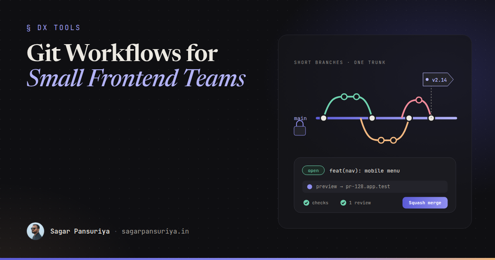
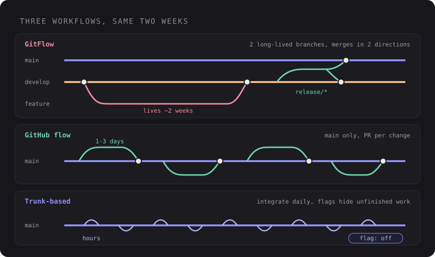

Git Workflows for Small Frontend Teams: A Sensible Default


Picture a five-person frontend team that adopted GitFlow because a blog post said it was "the
professional way". There's a develop branch, a release/* branch every two
weeks, hotfix/* branches that have to be merged in two directions, and feature branches
that live for three weeks. Half of every Friday goes to resolving merge conflicts in files nobody
meant to touch.
The process isn't wrong, exactly. It was designed for a different problem: shipping versioned software
with several releases supported at once. Most small frontend teams ship one version of one app, often
several times a week. They need a workflow that keeps main deployable and branches short,
and gets out of the way.
This post compares the three workflows people usually argue about, then goes through the practices that matter more than the name of the workflow: short-lived branches, feature flags, preview deployments, commit conventions, branch protection, merge strategy and release tags. At the end there's a default I'd recommend for teams of three to eight.
The three contenders

GitFlow
Two long-lived branches (main and develop) plus feature, release and
hotfix branches. It gives you a clear place for release stabilisation and works well when you ship
numbered versions to customers who don't all upgrade at once: libraries, desktop apps, on-premise
software.
For a web app with one production environment, it mostly adds ceremony. Work sits on
develop waiting for a release branch, the gap between "merged" and "live" grows, and
hotfixes have to be merged back into two places.
GitHub flow
One long-lived branch, main, which is always deployable. Every change is a branch off
main, opened as a pull request, reviewed, and merged. Deploy main, or deploy
the branch before merging if your setup allows it. That's the whole thing.
It's simple enough that new developers pick it up in a day, and it maps directly onto how GitHub, GitLab and Bitbucket already work.
Trunk-based development
Everyone integrates into the trunk (main) at least daily. Branches, if you use them at
all, live for hours, not days. Incomplete work is hidden behind feature flags rather than kept on a
branch. It's the approach behind most continuous delivery practice, and it all but eliminates big merge
conflicts.
It asks more of the team: good automated tests, the discipline to split work into small safe steps, and comfort with shipping unfinished code that's switched off.
| GitFlow | GitHub flow | Trunk-based | |
|---|---|---|---|
| Long-lived branches | main + develop | main | main |
| Typical branch life | Days to weeks | 1 to 3 days | Hours |
| Unfinished work lives | On branches | On branches, briefly | Behind flags |
| Best fit | Versioned releases | Most web teams | Mature CI, frequent deploys |
| Main cost | Merge overhead | Needs discipline on branch size | Needs flags and tests |
In practice, GitHub flow with short branches and trunk-based development with branches are close cousins. The real difference is how long a branch is allowed to live.
Keep branches short
Branch lifetime matters more than workflow choice. A branch that lives for two days merges cleanly. A branch that lives for two weeks diverges from everyone else's work, gets a 60-file review nobody reads properly, and turns into an afternoon of conflict resolution.
A few habits that keep branches small:
- Split by deployable step, not by feature. "Add the new pricing table component (unused)" is a fine first pull request. "Wire it into the pricing page behind a flag" is the second.
- Rebase or merge
maininto your branch daily if it lives more than a day. Small conflicts early beat one big one at the end. - Aim for reviewable pull requests, roughly a few hundred lines of real change. Reviews get better, not just faster. I wrote more about that side in frontend code reviews that teach.
Feature flags make short branches possible
The usual objection to short branches is "but the feature isn't finished". Feature flags answer that: merge the code, keep it switched off in production, turn it on when it's ready, for everyone or for a few users first.
For Laravel apps, Laravel Pennant is the first-party option. Define a flag, then check it in PHP or Blade:
// app/Providers/AppServiceProvider.php
use Laravel\Pennant\Feature;
Feature::define('new-checkout', fn (User $user) => $user->isInternal());@feature('new-checkout')
<x-checkout.v2 :cart="$cart" />
@else
<x-checkout.v1 :cart="$cart" />
@endfeatureFor a pure frontend app, a flag can be as simple as a config value or an environment variable read at build time. Whatever you use, treat flags as temporary: put a removal ticket in the backlog when you add one, or you'll have forty of them in a year.
Preview deployments per pull request
For frontend work, a preview URL for every pull request changes review more than any branching rule. Designers, product owners and QA can click through the real change without pulling a branch or asking a developer to share their screen.
Platforms like Netlify, Vercel and Cloudflare Pages create these automatically for connected repositories. For Laravel apps it takes more setup, since each preview needs its own environment and database, but many hosting platforms and CI setups support it, and even a single shared staging environment that deploys the branch on demand is much better than nothing.
Post the preview link in the pull request automatically. If people have to go looking for it, they won't.
Conventional commits, lightly
Conventional Commits is a simple format for commit messages: a type, an optional scope, and a description.
feat(checkout): add saved card selection
fix(nav): close mobile menu on route change
refactor(buttons): merge primary and cta variants
chore(deps): update tailwindcss
feat(api)!: rename /orders response fieldsThe ! (or a BREAKING CHANGE: footer) marks a breaking change. The format pays
off in three ways: history is scannable, changelogs can be generated, and it nudges people towards one
change per commit.
If you squash-merge (more on that below), only the pull request title ends up in main, so
enforce the convention on pull request titles rather than every commit on a branch. That's far less
annoying for the team.
Protect main
If main is always deployable, make it hard to break. On GitHub, branch protection rules or
rulesets let you:
- Require a pull request before merging, with at least one approval.
- Require status checks to pass: tests, linting, type checks, a build, maybe a performance budget.
- Require branches to be up to date before merging, if your CI is fast enough to make that tolerable.
- Block force pushes and branch deletion on
main.
Apply the rules to admins too. The one time someone "just pushes a quick fix" to main is
usually the time it breaks.
Squash, merge or rebase
All three pull request merge options are valid. Pick one per repository and turn the others off in the repository settings so nobody has to think about it.
| Strategy | What lands on main | Good when |
|---|---|---|
| Squash and merge | One commit per pull request | Branches have messy "wip" commits; you want a clean, revertable history |
| Merge commit | All branch commits plus a merge commit | You want the full branch history preserved |
| Rebase and merge | All branch commits, replayed linearly | People write careful, atomic commits |
For small teams with short branches, squash and merge is the sensible default. One pull
request becomes one commit, the title follows your commit convention, and reverting a bad change is a
single git revert.
Tag releases
Even if you deploy continuously, tagging gives you named points to roll back to and a place to hang release notes. Use annotated tags with semantic-looking versions or dates, whichever your team finds clearer:
git tag -a v2.14.0 -m "Saved cards, mobile nav fixes"
git push origin v2.14.0
# Or create a GitHub release with notes generated from merged pull requests
gh release create v2.14.0 --generate-notesMany teams trigger production deploys from tags instead of from every merge to main. That
gives you a deliberate "ship it" step without needing a release branch.
The default I'd recommend for 3 to 8 people
- GitHub flow:
mainis the only long-lived branch and it's always deployable. - Branches live one to two days. Anything bigger ships in steps behind a feature flag.
- Every pull request gets a preview deployment and at least one review.
mainis protected: required checks, required review, no force pushes, admins included.- Squash and merge only, with Conventional Commits enforced on pull request titles.
- Tag releases and deploy from tags, or deploy every merge if your tests and monitoring are good enough.
- Remove feature flags within a sprint or two of full rollout.
Reach for GitFlow only if you genuinely maintain multiple released versions. Move closer to pure trunk-based development as your test suite and flagging mature. For most small frontend teams, this default removes the Friday merge afternoon and leaves more time for the actual work.
Discussion